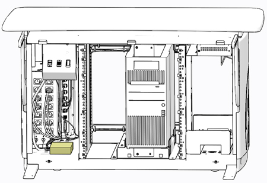
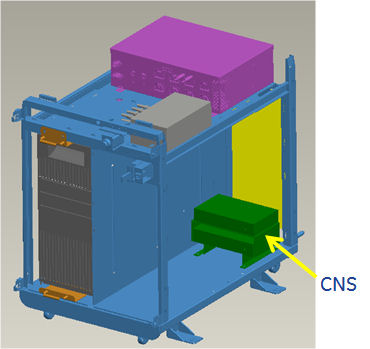
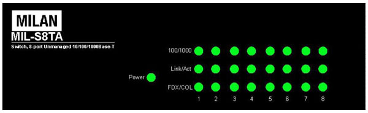

Operating Documentation
Direction 5193574-800, Rev# 22
LightSpeed 7.X Service Methods
Module Version 3.0, Version Date 3/20/14
Operating Documentation |
The following information will assist in confirming if the CNS is experiencing a hardware fault. Although the following is not a complete set of diagnostics, it should be sufficient in determining if the CNS is suffering from hardware issues at the prescribe Field Replaceable Unit (FRU) level.
Illustration 1: Console Network Switch (CNS) - GOC6.6

Illustration 2: Console Network Switch (CNS) - NIO64

Before proceeding with the rest of this procedure, use the following checklist to find possible solutions for CNS problems.
Is the CNS powered on?
Is the Power LED illuminated?
Has Circuit Breaker #1 (CB2) tripped on Power Distribution Box?
Is the CNS connected to the electrical outlet on the Power Distribution Box?
Are all Ethernet Cables properly inserted? Check cable connections at the CNS and at the console rear Bulkhead Panel.
The CNS has LEDs mounted on its front panel to give operational status of the Switch and Ethernet ports.
Illustration 3: CNS LED Indicators

Table 1: CNS LED Indicators LED Status
| LED | Status | Description |
| Power | Green | Power On |
| Off | Power is not connected | |
| 100/1000 | Green | The port is operating at the speed of 1000Mbps |
| Orange | The port is operating at the speed of 100Mbps | |
| Off | No device attached or in 10Mbps mode | |
| LNK/ACT | Green | The port is connecting with the device |
| Blinking | The port is receiving or transmitting data | |
| Off | No device attached | |
| FDX/COL | Orange | The port is operating in Full-duplex mode |
| Blinking | Packet collision occurred on this port | |
| Off | No device attached or in half-duplex mode |
Table 2: CNS Port Assignments
| Port | Description |
| 1 | NIO64 Computer |
| 2 | AW |
| 3 | EKG |
| 4 | RPM |
| 5 | Service Port |
| 6 | Not Used |
| 7 | Not Used |
| 8 | Not Used |